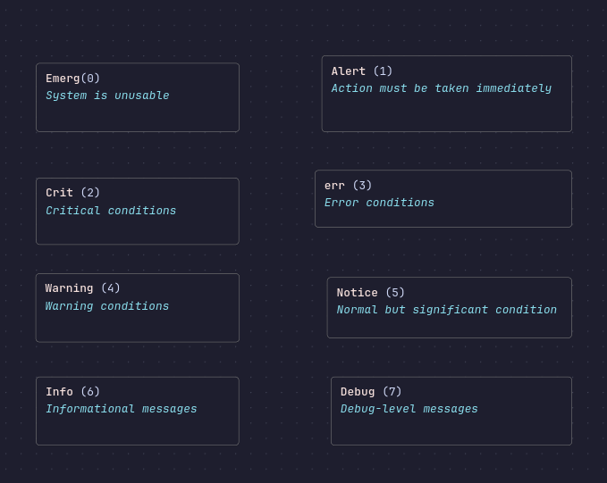

The only journal worth reading
Everyone has that moment in their life when they think, “Maybe today is the day I’ll start journaling.” It’s just a fleeting thought. You pick up the pen, only to realize that after a long day, you struggle to recall anything significant. Or worse, there’s an overwhelming amount to write about, leaving you torn between writing it all and watching TV with your favorite anime girlfriend. Fortunately, we have computers…
Computers log everything
Booting, crashes, and now even your browser activity. Recently, Microsoft announced their new killer feature called Copilot Recall. It’s a personal LLM that logs every keystroke and every action you do on your computer, essentially taking screenshots every 5 seconds if the content on your desktop changes.
Microsoft even designed a dedicated chip to support this AI model, called the Turbocharged NPU.
Here are the requirements:
-A Copilot Plus PC with the special chip
-16 GB of RAM
-8 processors
-256 GB storage
-50 GB memory storage
-An additional 25 GB for all the screenshots
With this, you won’t have to remember anything. A tool that, after six months, will recall what nasty OnlyFans video you watched or why your friend was wrong about Bill Gates.
This is a bad example of logging.
It’s not like capturing moments isn’t important, but sometimes it’s better to forget.
If you watched ‘The Entire History of You’, the third episode of the first season of Black Mirror, you’ll quickly understand how destructive this can be for human psychology.
But it’s easy; we can always go to therapy.
What’s more worrying is that someone else can see everything we do. Although Microsoft claims that this will remain only on your local computer (for now!), this doesn’t make it less vulnerable.
It’s also closed-source, so you don’t have any idea whether this is true. Imagine a malicious actor getting access to the contents of this vector database.
They would have literally everything. Considering it’s a new feature, there will likely be many bugs and vulnerabilities. It’s already possible with just two lines of code, as they’re just files in AppData, in the new CoreAIPlatform folder.
For more information, check this article: How to do it.
Today, however, I want to present a more positive side of logging, the balance between privacy and functionality. Please welcome our todays guest , journalctl.
The only journal worth reading
A Small Introduction
Journalctl is an honorable member of the systemd tools suite.
It manages the logging portion of all the units.
It’s important to know that its logs are binary.
This means you won’t be able to see them directly, but it also saves you quite a lot of space.
If you want to know whether journalctl is enabled, check out /etc/systemd/journald.conf.
You should have Storage set to persistent.
If not, change this and run sudo systemctl reload systemd-journald.
(because journalctl is also a unit by itself)
If you’re ever worried that journalctl will take all your space, try this command to realize how little space that amount of information takes:
How Does journalctl Think?

Journalctl views the changing reality of your system in eight categories.
This mindset is called structured logging, and it’s worth adopting.
Usually, when we log something in an application, we think of it as a simple statement—perhaps noting an error or confirming that execution was successful.
Some of us, especially more advanced users, add timestamps and exit codes to the logging architecture.
That’s good, but there’s one issue: it’s really hard to know what is what.
Is it a warning, an error, or maybe a notice that I have to change my configuration?
As the log grows, it becomes even harder to search for errors or alerts.
That’s why people use packages like log/slog to make the logging searchable and manageable.
Remember that structured logs can be parsed in any format.
If you don’t like JSON, no problem—there’s XML or even a CSV version.
To search for a particular priority in journalctl, we use:
Of course, you can search for multiple priorities with:
Most components of our computers are units.
We can usually add the -u flag, or since systemd is the parent of
all processes, we can use filters by UID, GID, or PID:
This structured approach allows you to quickly filter and find specific types of log messages, making system administration more efficient.
We Are Surrounded by Sessions
Yoga sessions, therapy sessions, browser sessions , sessions are everywhere. journalctl is no exception; it keeps things real with its boot session
To list them, just type:
Number 0 is the current boot session (a small tribute to programmers).
To pick a specific boot session, you can use the -b flag followed by the boot number.
For example, to view the logs from the previous boot session, you can use:
But journalctl isn’t alone; there are many more journalists among us…
Who Watches Last, Lastb? Somebody’s Watching Me?
I always feel like Somebody’s Watching Me…
Such a good tune, truly a fan. But back to the point.
Have you ever wondered how to check the first time you successfully logged into the system? I bet you don’t me neither.
Usually, we skip the successful logins because we live in a single-user environment, meaning if somebody logged in successfully, it should be us.
But we forget that these files don’t only check for logging into the system.
They check for any other login protocols like SSH, RDP, VNC, you name it. Sometimes, we forget to set up the password and a simple ssh-copy-id on our local network might be devastating.
That’s why it’s useful to check from time to time to ensure we are alone.
However, if we set up everything properly in terms of security—authentication, password, etc.—or we have a server, there’s lastb that comes in handy. Can you guess what it does? Usually, the Linux commands are pretty self-explanatory, but I had a hard time memorizing this one.
The answer: it logs the failed logins to the system. What’s interesting is you can’t view this command without sudo (unlike last).
To check successful logins, use:
To check failed login attempts, use:
All of Us Are Peeping Toms Somewhere Deep Down
That’s why the w command was invented.
It lets us see what users are doing on our system in real-time. What’s funny is you can use watch w to get real-time updates.
So many watchers!
If you don’t have enough, there’s also a program called whowatch which not only displays what the user is doing but also lets you kill the processes they run in real-time.
Unfortunately, it’s a bit outdated the last commit was two years ago
(I’m already thinking of rewriting this in Go since it’s such a nice feature for sysadmins).
So, if you want to mess up a 3-hour download of somebody’s game, feel free…
To see what users are doing, use:
To get real-time updates, use:
To use whowatch, which might need to be installed first:
Logs Are Everywhere, You Just Have to Reach for Them
Unfortunately, in the Linux world, we tend to skip any form of reading logs because it’s much simpler and quicker to create a new machine or to format it than to traverse through the logs. But this is the wrong way of thinking.
It completely falls short when it comes to future problem-solving abilities. We just run from the problem.
It’s important to know that when you understand how the logs work and you try it, you gain something that is priceless. You truly know what’s going on with your system.
This means there won’t be any missing patches or broken processes that an attacker can use against you. There won’t be any random crashes or kernel issues.
Your system will be completely stable.
And trust me, stability in the time we live in is invaluable.
I don’t have a story about catching someone red-handed trying to break into my system
(although I recently saw a cool project about creating an easy web honeypot and catching bots in Go and really want to try it).
But I remember when I struggled with the Qtile configuration, trying to get it right, constantly killing it, changing the code, and logging in
it was a nightmare.
Eventually, I left this and never came back, but there was a remedy for this. All I had to do was to read the Qtile log file at \~/.local/share/qtile/qtile.log, and I would have known what I messed up.
To Sum Up
Logging doesn’t have to be scary (despite Microsoft demonizing it). I hope I convinced you to at least try it for fun with whowatch or to explore how programmers design their logs. Sometimes it might be hard to keep track of everything, I know this. In the next post, I will try to show you that you can make it far easier by creating audits.
But for now, peace out and remember: journalct is the only journal worth reading.